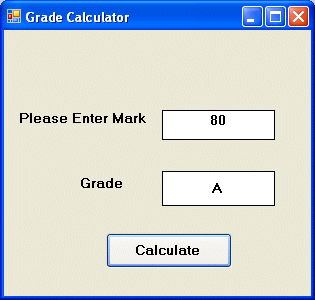

Visual Studio 2013 Lesson 14: Making Decisions using Select Case
[Lesson 13] << [Contents] >> [Lesson 15]
14.1 The Select Case…End Select Structure
The structure of the Select Case control structure in Visual Studio 2013 is as follows:
Block of one or more Visual Studio 2013 statements
Case expression list 2
Block of one or more Visual Studio 2013 Statements
Case expression list 3
.
.
Case Else
Block of one or more Visual Studio 2013 StatementsEnd Select
14.2 The usage of Select Case is shown in the following examples
Example 14.1: Examination
Grades
Dim grade As String
Private Sub Compute_Click( )
grade=txtgrade.Text
Select Case grade
Case “A”
Label1.Text=”High Distinction”
Case “A-”
Label1.Text=”Distinction”
Case “B”
Label1.Text=”Credit”
Case “C”
Label1.Text=”Pass”
Case Else
Label1.Text=”Fail”
End Select
Example 14.2
In this example, you can use the keyword Is together with the comparison
operators.Private Sub Button1_Click(ByVal sender As System.Object, ByVal e
As System.EventArgs) Handles Button1.Click’Examination Marks
Dim mark As Single
mark = mrk.Text
Select Case mark
Case Is >= 85
Label1.Text= “Excellence”
Case Is >= 70
Label2.Text= “Good”
Case Is >= 60
Label3.Text = “Above Average”
Case Is >= 50
Label4.Text= “Average”
Case Else
Label5.Text = “Need to work harder”
End Select
End Sub
Example 14.3
Example 14.2 can be rewritten as follows:
Private Sub Button1_Click(ByVal sender As System.Object, ByVal e As System.EventArgs) Handles Button1.Click
‘Examination Marks
Dim mark As Single
mark = Textbox1.Text
Select Case mark
Case 0 to 49
Label1.Text = “Need to work harder”
Case 50 to 59
Label1.Text = “Average” s
Case 60 to 69
Label1.Text= “Above Average”
Case 70 to 84
Label1.Text = “Good”
Case 85 to 100
Label1.Text= “Excellence”
Case Else
Label1.Text= “Wrong entry, please reenter the mark”
End Select
End Sub
Example 14.4
Grades in high school are usually presented with a single capital letter such as A, B, C, D or E. The grades can be computed as follow:
Private Sub Button1_Click(ByVal sender As System.Object, ByVal e As System.EventArgs) Handles Button1.Click
‘Examination Marks
Dim mark As Single
mark = TextBox1.Text
Select Case mark
Case 0 To 49
Label1.Text = “E”
Case 50 To 59
Label1.Text = “D”
Case 60 To 69
Label1.Text = “C”
Case 70 To 79
Label1.Text = “B”
Case 80 To 100
Label1.Text = “A”
Case Else
Label1.Text = “Error, please reenter the mark”
End Select
End Sub
The output:

Figure 14.1